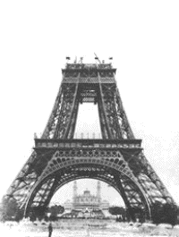
La Belle Époque (environ 1890-1914) correspond à l'apogée de la stabilité monétaire du franc germinal sous la IIIe République. C'est l'époque de la Semeuse d'Oscar Roty, dont le type apparaît sur les pièces d'argent à partir de 1897-1898 et reste dans la mémoire collective française.
Les 20 francs or « Coq » et les pièces d'argent de 50 centimes, 1 franc, 2 francs et 5 francs circulent largement. Cette période s'achève avec la Première Guerre mondiale, qui bouleverse durablement le système monétaire et conduit, après l'instabilité des années 1920, à la stabilisation Poincaré.
Sources : infonumis.info · catalogues Le Franc & Gadoury
Les monnaies de la Belle Époque
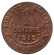
Revers1 Centime DANIEL-DUPUIS
Date : 1919 ; 2.406.782 ex. (pour un total de fabrication de 30.967.371 ex. de 1898 à 1920)
Bronze ; 15 mm ; 1.01g (théorique 1g)
Circulation : jusqu'en 1940 (soit pendant 42 ans)
Tranche : lisse
Avers : REPUBLIQUE FRANÇAISE ; Buste habillé de la République aux cheveux longs à droite, portant un bonnet phrygien maintenu par un ruban ; une branche d'olivier montant depuis le buste et passée dans le ruban du bonnet ; au-dessous DANIEL DUPUIS en creux.
Revers : LIBERTE EGALITE FRATERNITE ; 1 / CENTIME en deux lignes dans le champ, au-dessus du millésime, le tout encadré par une branche d'olivier en deux rameaux.
Références : F.105 G.90
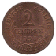
Revers2 Centimes DANIEL-DUPUIS
Date : 1898 *** VERIFIER ANNEE *** ; 125.000 ex. (pour un total de fabrication de 23.475.802 ex. de 1898 à 1920)
Bronze ; 20 mm ; 1.93g (théorique 2g)
Circulation : jusqu'en 1940 (soit pendant 42 ans)
Tranche : lisse
Avers : REPUBLIQUE FRANÇAISE ; Buste habillé de la République aux cheveux longs à droite, portant un bonnet phrygien maintenu par un ruban ; une branche d'olivier montant depuis le buste et passée dans le ruban du bonnet ; au-dessous DANIEL DUPUIS en creux.
Revers : LIBERTE EGALITE FRATERNITE ; 2 / CENTIMES en deux lignes dans le champ, au-dessus du millésime, le tout encadré par une branche d'olivier en deux rameaux.
Références : F.110 G.107
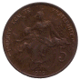
Revers5 Centimes DANIEL-DUPUIS
Date : 1916 ; 41.531.365 ex. (pour un total de fabrication de 211.630.899 ex. de 1898 à 1921)
Bronze ; 25 mm ; 4.96g (théorique 5g)
Circulation : jusqu'en 1934 (soit pendant 36 ans)
Tranche : lisse
Avers : REPUBLIQUE FRANÇAISE ; Buste habillé de la République aux cheveux longs à droite, portant un bonnet phrygien maintenu par un ruban ; une branche d'olivier montant depuis le buste et passée dans le ruban du bonnet ; au-dessous DANIEL DUPUIS en creux.
Revers : LIBERTE EGALITE FRATERNITE ; La République cuirassée d'apparat avec Gorgone à l'égide, laurée, drapée et casquée au coq, assise à gauche sur un rocher, tenant de sa main droite un drapeau-étendard marqué RF sur l'enseigne et de sa main gauche une branche d'olivier ; à sa droite, un enfant nu la regarde, tenant des épis de blé de la main droite, lui présentant un marteau et des pinces de la main gauche ; à l'exergue DANIEL DUPUIS en creux et le millésime ; 5 c sur un cartouche recouvrant le rocher.
Références : F.119 G.165
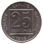
Revers25 Centimes PATEY 1er TYPE
Date : 1903 ; 16.000.000 ex. fabriqués uniquement en 1903
Nickel ; 24 mm ; 6.94g (théorique 7g)
Circulation : jusqu'en 1933 (soit pendant 30 ans)
Tranche : lisse
Avers : RÉPUBLIQUE FRANÇAISE ; Buste drapé et cuirassé de la République aux cheveux longs à gauche, coiffée d'un bonnet phrygien orné de deux branches de laurier ; une égide à tête de lion sur le haut de la cuirasse ; dans le champ, devant le cou, A. PATEY
Revers : LIBERTÉ ÉGALITÉ FRATERNITÉ / (différent) (millésime) (différent) autour d'un carré à double bourdure contenant 25 / CENTIMES en deux lignes.
Références : F.168 G.362
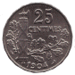
Revers25 Centimes PATEY 2e TYPE
Date : 1904 ; 16.000.000 ex. (pour un total de fabrication de 24.000.000 ex. de 1904 à 1905)
Nickel ; 24 mm ; 6.89g (théorique 7g)
Circulation : jusqu'en 1933 (soit pendant 29 ans)
Tranche : lisse et polygonale à 22 pans
Avers : RÉPUBLIQUE FRANÇAISE ; Buste drapé et cuirassé de la République aux cheveux longs à gauche, coiffée d'un bonnet phrygien orné de deux branches de laurier ; une égide à tête de lion sur le haut de la cuirasse ; dans le champ, devant le cou, A. PATEY
Revers : 25 / CENTIMES ; Faisceau de licteur traversé par une hache tournée à droite, sur une branche de chêne de deux rameaux ; au-dessous le millésime.
Références : F.169 G.364
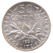
Revers50 Centimes SEMEUSE
Date : 1920 ; 8.508.560 ex. (pour un total de fabrication de 357.531.033 ex. de 1897 à 1920)
Argent 835 ‰ ; 18 mm ; 2.50g (théorique 2.50g)
Circulation : jusqu'en 1928
Tranche : cannelée
Avers : REPUBLIQUE FRANÇAISE ; La République à gauche, sous les traits d'une semeuse drapée et coiffée d'un bonnet phrygien, aux cheveux longs, marchant et semant à contre-vent ; en arrière-plan, derrière la semeuse à droite, un soleil levant ; au-dessous, en creux O. ROTY.
Revers : LIBERTE ∙ EGALITE ∙ FRATERNITE ; 50 / CENTIMES en deux lignes au-dessus d'une branche d'olivier tournée à gauche ; au-dessous, le millésime et les différents monétaires.
Références : F.190 G.420
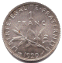
Revers1 Franc SEMEUSE
Date : 1920 ; 19.321.795 ex. (pour un total de fabrication de 434.871.373 ex. de 1898 à 1920)
Argent 835 ‰ ; 23 mm ; 4.99g (théorique 5g)
Circulation : jusqu'en 1928
Tranche : cannelée
Avers : REPUBLIQUE FRANÇAISE ; La République à gauche, sous les traits d'une semeuse drapée et coiffée d'un bonnet phrygien, aux cheveux longs, marchant et semant à contre-vent ; en arrière-plan, derrière la semeuse à droite, un soleil levant ; au-dessous, en creux O. ROTY.
Revers : LIBERTE ∙ EGALITE ∙ FRATERNITE ; 1 / FRANC en deux lignes au-dessus d'une branche d'olivier tournée à gauche ; au-dessous, le millésime encadré des différents monétaires.
Références : F.217 G.467
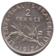
Revers2 Francs SEMEUSE
Date : 1917 ; 16.555.357 ex. (pour un total de fabrication de 102.438.423 ex. de 1898 à 1920)
Argent 835 ‰ ; 27 mm ; 10.01g (théorique 10g)
Circulation : jusqu'en 1928
Tranche : cannelée
Avers : REPUBLIQUE FRANÇAISE ; La République à gauche, sous les traits d'une semeuse drapée et coiffée d'un bonnet phrygien, aux cheveux longs, marchant et semant à contre-vent ; en arrière-plan, derrière la semeuse à droite, un soleil levant ; au-dessous, en creux O. ROTY.
Revers : LIBERTE ∙ EGALITE ∙ FRATERNITE ; 2 / FRANCS en deux lignes au-dessus d'une branche d'olivier tournée à gauche ; au-dessous, le millésime encadré des différents monétaires.
Références : F.266 G.532
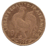
Revers10 Francs OR, COQ
Date : 1906 ; 3.665.353 ex. (pour un total de fabrication de 23.857.852 ex. de 1899 à 1914)
Or 900 ‰ ; 19 mm ; 3.23g (théorique 3.2258g)
Circulation : jusqu'en 1928
Tranche : cannelée
Avers : REPUBLIQUE FRANÇAISE ∙ ; Buste de Marianne à droite, aux cheveux longs, drapée et coiffée du bonnet phrygien décoré d'une branche de chêne portant fruits ; signé J.C.C. devant le cou dans le champ droit.
Revers : LIBERTE ∙ EGALITE ∙ FRATERNITE ; 10 Fcs de part et d'autre d'un coq debout à gauche sur une ligne de sol portant quelques herbes et un groupe de fleurs ; sous cette ligne formant exergue, le millésime et, éventuellement, les différents l'encadrant.
Références : F.509 G.1017
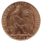
Revers20 Francs OR, LIBERTE EGALITE FRATERNITE
Date : 1912 ; 10.331.805 ex. (pour un total de fabrication de 74.414.415 ex. de 1907 à 1914)
Or 900 ‰ ; 21 mm ; 6.46g (théorique 6.45161g)
Circulation : jusqu'en 1928
Tranche en relief : *++*LIBERTÉ+*ÉGALITÉ+*FRATERNITÉ
Avers : REPUBLIQUE FRANÇAISE ∙ ; Buste de Marianne à droite, aux cheveux longs, drapée et coiffée du bonnet phrygien décoré d'une branche de chêne portant fruits ; signé J.C.C. devant le cou dans le champ droit.
Revers : LIBERTE ∙ EGALITE ∙ FRATERNITE ; 20 Fcs de part et d'autre d'un coq debout à gauche sur une ligne de sol portant quelques herbes et un groupe de fleurs ; sous cette ligne formant exergue, le millésime et, éventuellement, les différents l'encadrant. Le listel est fait d'oves enchassées.
Références : F.535 G.1064a